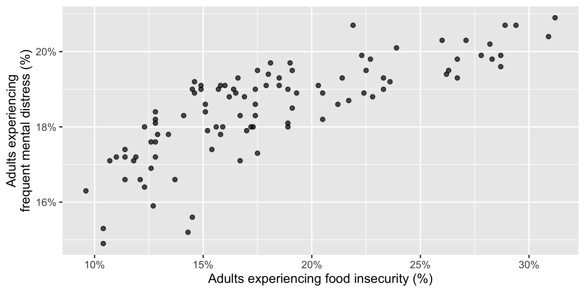

Linear regression with a single predictor
Lecture 15
October 21, 2026
While you wait: Participate 📱💻
Each point represents one North Carolina county.
What do you notice? What do you wonder?

Go to wooclap.com and use the code BSAFXJG.
Modeling North Carolina counties
Describe: How is county-level food insecurity related to frequent mental distress?
Predict: For a county where 20% of adults experience food insecurity, what percentage would we predict experience frequent mental distress?

Modelling North Carolina counties
Describe: How is county-level food insecurity related to frequent mental distress?

Modelling North Carolina counties
Predict: For a county where 20% of adults experience food insecurity, what percentage would we predict experience frequent mental distress?

Modelling
Use models to describe relationships between variables and to make predictions.
For now, we will focus on linear models—but there are many other types of models.

- A model is a useful simplification, not a complete description of reality.
Predictor (explanatory variable)
| county | food_insecurity | mental_distress |
|---|---|---|
| Alamance | 17.2 | 18 |
| Alexander | 15.8 | 19.1 |
| Alleghany | 18.5 | 19.3 |
| Anson | 28.2 | 20.2 |
| Ashe | 14.6 | 18.9 |
| Avery | 15.1 | 18.4 |
| ... | ... | ... |

Outcome (response variable)
| county | food_insecurity | mental_distress |
|---|---|---|
| Alamance | 17.2 | 18 |
| Alexander | 15.8 | 19.1 |
| Alleghany | 18.5 | 19.3 |
| Anson | 28.2 | 20.2 |
| Ashe | 14.6 | 18.9 |
| Avery | 15.1 | 18.4 |
| ... | ... | ... |

Regression line

Regression line: slope

Regression line: intercept

Correlation

Correlation
- Measures the direction and strength of a linear relationship.
- Ranges between -1 and 1.
- Has the same sign as the slope.
- Has no units.

Participate 📱💻
Which of the following is the best guess for the correlation between the two variables below?

- -0.95
- -0.53
- 0.00
- 0.25
- 0.80
Go to wooclap.com and use the code BSAFXJG.
Visualizing the model
Code
ggplot(
nc_places,
aes(x = food_insecurity, y = mental_distress)
) +
geom_point() +
geom_smooth(method = "lm", se = FALSE) +
scale_x_continuous(labels = percent_label()) +
scale_y_continuous(labels = percent_label()) +
labs(
x = "Adults experiencing food insecurity (%)",
y = "Adults experiencing\nfrequent mental distress (%)"
)
Participate 📱💻
The slope of the fitted model is 0.184. Which of the following is the best interpretation?
- Increasing food insecurity by one percentage point causes mental-distress prevalence to increase by 0.184 percentage points.
- For each percentage-point county food-insecurity prevalence is higher, mental-distress prevaence is expected to be higher, on average, by 0.184 percentage points higher.
- For each one percentage-point increase in mental-distress prevalence, predicted food-insecurity prevalence is 0.184 percentage points higher.
- Every adult experiencing food insecurity has 0.184 additional mentally unhealthy days.
Go to wooclap.com and use the code BSAFXJG.
Participate 📱💻
The intercept of the fitted model is 15.2. Which is the best interpretation?
- For a county with 0% food-insecurity prevalence, the model predicts 15.2% mental-distress prevalence.
- For a county with 0% mental-distress prevalence, the model predicts 15.2% food-insecurity prevalence.
- A one percentage-point increase in food-insecurity prevalence predicts a 15.2 percentage-point increase in mental distress.
- The average North Carolina county has 15.2% mental-distress prevalence.
Go to wooclap.com and use the code BSAFXJG.
Choosing values for \(b_1\) and \(b_0\)
Which line fits the points best—and what do we mean by “best”?